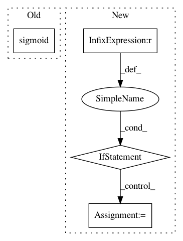

28eb8ed1d64fb8d5cfddc58d65fc48aeace6f436,pyro/distributions/transforms/spline.py,ConditionalSpline,condition,#ConditionalSpline#Any#,484
Before Change
// Rational linear splines have additional lambda parameters
if self.order == "linear":
w, h, d, l = self.nn(context)
l = torch.sigmoid(l.reshape(l.shape[:-1] + (self.input_dim, self.count_bins)))
elif self.order == "quadratic":
w, h, d = self.nn(context)
l = None
else:
After Change
self.order))
// AutoRegressiveNN and DenseNN return different shapes...
if w.shape[-1] == self.input_dim:
w = w.transpose(-1, -2)
h = h.transpose(-1, -2)
d = d.transpose(-1, -2)
else:
w = w.reshape(w.shape[:-1] + (self.input_dim, self.count_bins))
h = h.reshape(h.shape[:-1] + (self.input_dim, self.count_bins))
d = d.reshape(d.shape[:-1] + (self.input_dim, self.count_bins - 1))
w = F.softmax(w, dim=-1)
h = F.softmax(h, dim=-1)
d = F.softplus(d)
return ConditionedSpline(w, h, d, l, bound=self.bound, order=self.order)
In pattern: SUPERPATTERN
Frequency: 3
Non-data size: 4
Instances
Project Name: uber/pyro
Commit Name: 28eb8ed1d64fb8d5cfddc58d65fc48aeace6f436
Time: 2020-06-28
Author: info@stefanwebb.me
File Name: pyro/distributions/transforms/spline.py
Class Name: ConditionalSpline
Method Name: condition
Project Name: numenta/NAB
Commit Name: 0d8f7ad4309f4053d1e9cd5d99435a03c5e2a8a5
Time: 2014-10-27
Author: sahmad@numenta.com
File Name: nab/scorer.py
Class Name: Scorer
Method Name: getScore
Project Name: reinforceio/tensorforce
Commit Name: 92880f8941450b497628b3c5426c40912d1015b8
Time: 2017-07-15
Author: aok25@cl.cam.ac.uk
File Name: tensorforce/core/distributions/gaussian.py
Class Name: Gaussian
Method Name: create_tf_operations